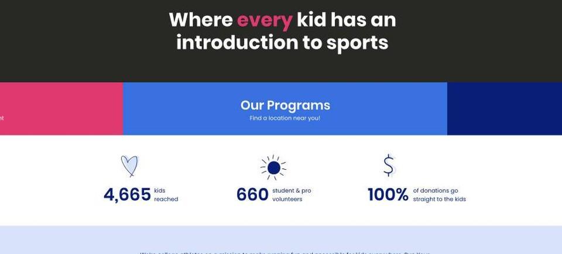
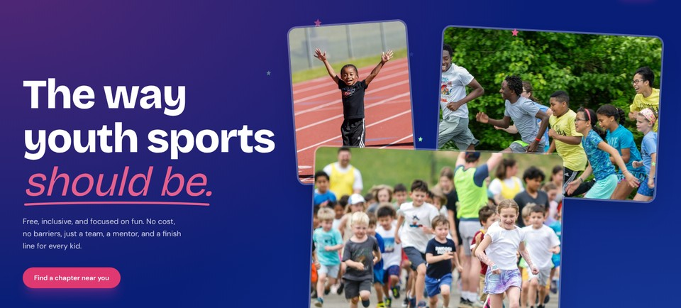
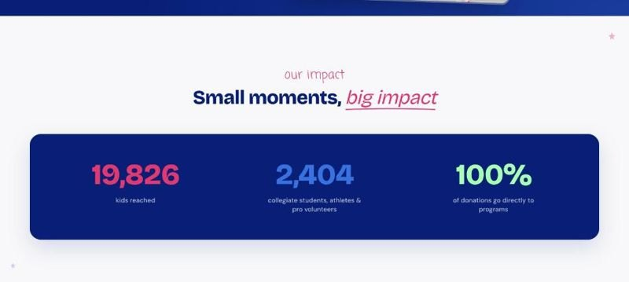
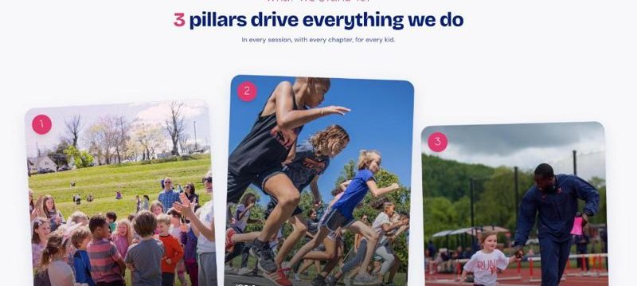
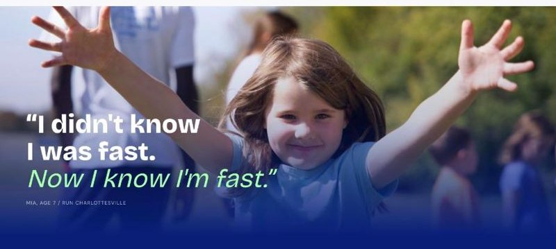
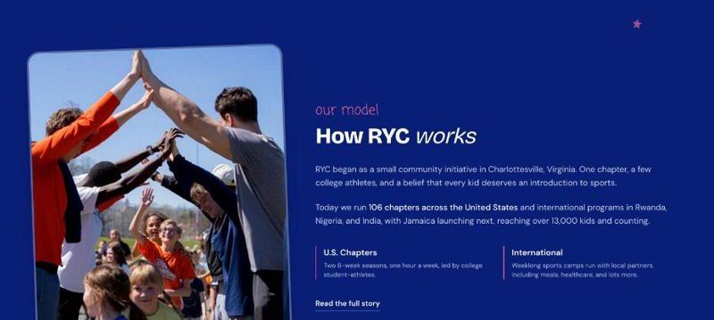

grab a seat & a wrap, we start at 6:20
1 Why
2 Your voice
3 Your design
4 Your site
Make your AI look & sound like you
AI@GSB WORKSHOP 3: AI PERSONALIZATION
Don't be one of a million.
Be one in a million.
GLENN KRAMON
1 Why
2 Your voice
3 Your design
4 Your site
hi!! I'm
Mary Blankemeier
NOW
AI@GSB
Run Your City
Early-Stage Healthcare
BEFORE
Clinton Health Access Initiative
Bain & Company
UVA Engineering + D1 Miler

MY BIO, IF I LET AI WRITE IT
"Results-driven leader passionate about leveraging AI to transform health care."
me: one more ex-consultant at the GSB, trying not to sound like one.
1 Why
2 Your voice
3 Your design
4 Your site
TODAY'S GOAL
Your AI feels like you
VOICE
sounds like you
DESIGN
looks like you
META GOAL
Have fun learning AI
1 Why
2 Your voice
3 Your design
4 Your site
The plan
15 MIN
Me
1 Why
2 Your voice
3 Your design
4 Your site
50 MIN
You
You build.
We walk around.
10 MIN
Us
Debrief
1 Why
2 Your voice
3 Your design
4 Your site
Left alone, AI builds the same site for everyone
Same prompt both times: "Make me a personal website with my resume"

NO SKILLS
blah.
yuck.
throw up.

WITH MY TWO SKILLS
+ voice
+ design
1 Why
2 Your voice
3 Your design
4 Your site
Left alone, AI drifts to the average
Hintze et al., 2025
Why? Each round drops what's unusual and fills the gap with what's most common. 100 rounds = visual elevator music
1 Why
2 Your voice
3 Your design
4 Your site
People trust work less when they think AI made it
16 to 20%
drop in trust once people learn AI was used
SCHILKE & REIMANN 2025
1 Why
2 Your voice
3 Your design
4 Your site
Teach it once. Sound & look like you everywhere.
voice
SKILL.md
design
SKILL.md
TONIGHT'S PROOF
your website
Cover letters
Your résumé
Class papers
Texts & WhatsApp
Slide decks
Event pages
One-pagers
1 Why
2 Your voice
3 Your design
4 Your site
RECAP
A skill is a recipe AI reads before it cooks
Write it once & AI cooks it the same way every time
| MY TOP SKILLS | WHEN I USE IT | WHAT IT DOES |
|---|---|---|
| my-writing-style | Anything I send as me | Emails, Slack, texts in my voice |
| ryc-brand | Anything Run Your City | Flyers, decks, these RYC slides |
| winning-writing | Before I hit send | Glenn Kramon's rules: BLUF it, cut it, grade it |
| humanizer | When it sounds like AI | Kills em dashes, "delve" & lists of three |
| interviewer | Before building a deliverable | Gives me context on deliverable + asks me what it needs |
| class prep | Every morning | What to listen to for each class + what's due |
1 Why
2 Your voice
3 Your design
4 Your site
Every skill gets good the same way
You'll run this loop 3 times tonight: on your voice, your design and your site
1 Why
2 Your voice
3 Your design
4 Your site
Samples + tone + nevers = your voice
SAMPLES
How you write
about you
An email you sent
A post you wrote
A text to a friend
or ask Claude: "hey bestie, give me examples of how I write"
+
TONE
Who's reading
about your audience
Polished structured, concise
Warm direct, humble
Playful candid, fun
E.g., you're not using insanely big words when you're trying to empower kids
+
NEVERS
Ish that makes you cringe
about you + your audience
passionate about
proven track record
em dashes
· dots (the new em dash)
1 Why
2 Your voice
3 Your design
4 Your site
Under the hood... let's get technical
1 THE RECIPE BOX
It reads card titles first
Claude only reads each card's title: the skill's name & one-line description. It pulls the full recipe when your ask matches.
2 FEW-SHOT LEARNING
Let it taste your cooking
"Few-shot" = learning from a few examples. 3 dishes you really made teach your flavor better than 30 rules.
3 CONTEXT
The chat is the counter
It only sees what's on the counter. A crowded counter gets messy, so recipes wait in the box till they're needed.
Pro move
The card title is the trigger. "Use whenever I say cleanup" → say cleanup & it pulls the card
1 Why
2 Your voice
3 Your design
4 Your site
Assets + vibe + nevers = your look
Example: Run Your City
ASSETS
What goes on the page


real kids, always. the logo, never redrawn
VIBE
How it should feel
pink
blue
navy

Find a chapter near you
the real button
Feel
warm
joyful
full of energy
NEVERS
The icks
stock photos
more than 3 colors
black body text
thin outline icons
a redrawn logo
a page with no kids
1 Why
2 Your voice
3 Your design
4 Your site
Run Your City, one year apart
Same brand, same colors. What changed: a few lines in the design skill.
LAST YEAR

Right colors. Template layout.
no kids on the page, thin icons, color blocks
TODAY

That's us. Live today.
+ kids lead: real photos + bold font + never stock




build, wince, write it down, repeat
1 Why
2 Your voice
3 Your design
4 Your site
Not to make it about me, but here's mine
mary-blankemeier.vercel.app
ASSETS
My headshot, resume & paintings
VIBE
Colors: Blue + yellow-green highlighter pulled from my headshot. Fonts: Poppins + handwriting
NEVERS
No emojis, tape on photos, big-number stats, dots, excessive spaces

/explore: the 3D version, live
1 Why
2 Your voice
3 Your design
4 Your site
Ask for three. Name what's off.
All you hand over: your two skills and one line. Real examples from building my site.
voice skill
samples, tone, nevers
+
design skill
assets, vibe, nevers
+
THE PROMPT
"Make me a personal website so people feel like they know me."
THEN THE LOOP, ON MY SITE
1 ASK FOR 3
"A letter, a running log, or a marked-up page?"
2 PICK YOUR FAV
Marked-up: clean Poppins page + blue-pen notes
3 SAY WHY
"It feels the most like me. I love the handwriting."
4 NAME WHAT'S OFF
"Big-number stats feel corporate. Tape on photos is tacky."
5 CLAUDE FIXES
Stats become plain bullets. Photos get a blue-pen outline.
6 UPDATE THE SKILL
Nevers: big-number stats, tape on photos. Go again.
Every fix lands in the skill, so it never comes back.
1 Why
2 Your voice
3 Your design
4 Your site
Put it online: laptop to link
YOUR LAPTOP
localhost
Only you can open it
THE CLOUD (A HOST)
Live web link
Anyone can open
Vercel (recommended)
GitHub Pages
1 Why
2 Your voice
3 Your design
4 Your site
Six habits that save you an hour
1 New chat when it gets messy
Long chats get foggy, like a crowded counter. Clear it & start fresh. Your skills come with you.
2 Talk, don't type
Hit the mic & ramble. My fave: Wispr Flow, fixes my spelling, free plan.
3 Tell it who's reading
A recruiter? A 10-year-old? Your mom? Say so before it writes.
4 Show, don't describe
Paste a screenshot or a site you love instead of hunting for adjectives.
5 Fix the skill, not the page
Same fix twice? Say "add this to my skill" so it sticks for good.
6 Push it to think, before acting
"Before you build, ask me 3 questions & tell me your plan."
1 Why
2 Your voice
3 Your design
4 Your site
Your turn
tutorial link is in your email (if you RSVP'd)

Questions
PollEv

Feedback
2 minutes
STUCK? DEBUG IN THIS ORDER
1
Ask AI in the chat you're building in
2
Hit "Stuck?" in the tutorial
3
Post on PollEv
4
Raise your hand. Mary, Josh, Kate or Bobby will come running